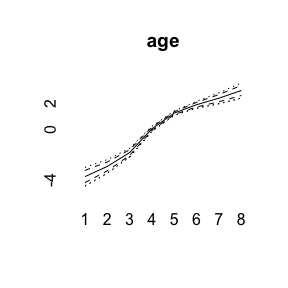
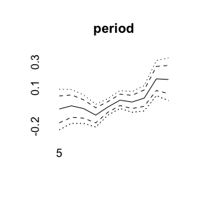
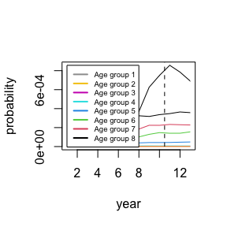

Short Introduction to BAMP
Volker Schmid
2020-01-21
bamp.RmdData example
BAMP includes a data example.
data(apc)
plot(cases[,1],type="l",ylim=range(cases), ylab="cases", xlab="year", main="cases per age group")
for (i in 2:8)lines(cases[,i], col=i)For simulating APC data, see vignette(“simulation”, package=“bamp”).
APC model with random walk first order prior
bamp() automatically performs a check for MCMC convergence using Gelman and Rubin’s convergence diagnostic. We can manually check the convergence again:
## [1] TRUENow we have a look at the model results. This includes estimates of smoothing parameters and deviance and DIC:
##
## Model:
## age (rw1) - period (rw1) - cohort (rw1) model
## Deviance: 231.31
## pD: 36.84
## DIC: 268.15
##
##
## Hyper parameters: 5% 50% 95%
## age 0.398 1.030 2.221
## period 69.543 203.045 629.245
## cohort 34.327 59.621 97.323We can plot the main APC effects using point-wise quantiles:


More quantiles are possible:

For other models see vignette(“modeling”,package=“bamp”).
Prediction
Using the prior assumption of a random walk for the period and cohort effect, one can predict cases for upcoming years.
m<-max(pred$pr[2,,])
plot(pred$pr[2,,8],type="l", ylab="probability", xlab="year", ylim=c(0,m))
for (i in 7:1)
lines(pred$pr[2,,i],col=8-i)
legend(1,m,col=8:1,legend=paste("Age group",1:8),lwd=2,cex=0.6)
lines(c(10.5,10.5),c(0,1),lty=2)
More details see vignette(“prediction”,package=“bamp”).